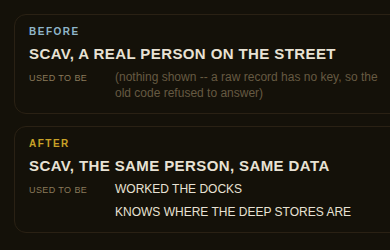

A real scavenger, real data, the same person asked two different ways.
A companion's own page (UI's newest work) asked who this person used to be, and the answer came back empty — for a real person who has a real former trade. The picture shows exactly why, and exactly what changed.

Every person in this game has two different objects that can describe them: the RAW record the city generates them from, and the WRAPPED card the street uses once it is ready to show you somebody. The street's card always got the wrapped one, so it always worked. A companion's own page reaches in one step earlier and grabs the raw one — and the question "what did you used to be" only ever knew how to answer the wrapped kind. So it said nothing, for a real person with a real answer sitting right there.
| asked | before | after |
|---|---|---|
| a raw record, the way the new page asks | nothing | the real answer |
| the same person, the wrapped way the street asks | the real answer | the same real answer |
| 24 real people, both ways compared | 0 disagreements | |
That last row is the one that matters. The old fear was one person coming back with two different pasts depending on which object asked — so the fix was checked against 24 real people, asked both ways, and every single one agreed with itself before this shipped.
A different kind of person — someone tracked by household instead of by street address — still gets refused rather than guessed at, because answering that one right needs a piece of information (which world seed) that a lone record does not carry. Silence is the honest answer there; a guess would not be.